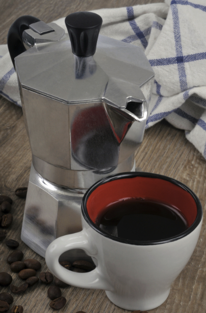
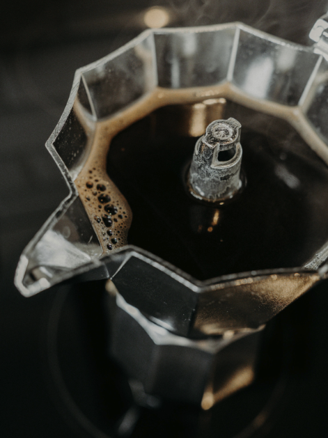

Comparez marques, matériaux, modèles et tailles sur la base de tests pratiques, goût, facilité d'utilisation et rapport qualité-prix.
Ce sont les comparatifs que nos lecteurs consultent le plus souvent. Utilisez-les comme raccourci vers les choix les plus importants.
Deux icônes Bialetti avec à peine de différence de goût, mais un look et un prix différents. Parfait si vous hésitez entre classique et plus moderne.
La Moka est plus abordable ; la Fiammetta a un look plus moderne.
Voir notre évaluationLe choix entre aluminium et inox en pratique : Fiammetta pour gaz/électrique, Venus si vous avez l'induction ou préférez l'inox.
Si vous passez un jour à l'induction, la Venus est le choix le plus sûr.
Voir notre évaluationVous hésitez encore entre une cafetière italienne et une machine automatique ou expresso ? Notre comparatif met côte à côte goût, coûts et entretien.
Les cafetières gagnent presque toujours sur le prix et la simplicité ; les machines expresso sur les possibilités cappuccino.
Lire le comparatif completNos comparatifs ne sont pas basés sur des fiches produit ou des premières impressions rapides. Chaque modèle que nous comparons est utilisé en pratique pendant au moins 3 mois et testé directement à côté des alternatives.
Notes : nous évaluons chaque modèle sur le goût du café (30%), la qualité de construction (20%), la facilité d'utilisation (15%), l'entretien (15%), le rapport qualité-prix (10%) et la durabilité (10%). Là où la préférence gustative personnelle entre en jeu, nous le mentionnons explicitement.

Bialetti Tradition & fonctionnalité
Alessi Design & exclusivitéBialetti est l'inventeur de la moka pot (depuis 1933) et mise sur la tradition, la facilité d'utilisation et l'accessibilité. Alessi est l'innovateur design avec des cafetières primées comme la Pulcina — plus chère, mais avec un style affirmé et une finition premium.
| Critère | Bialetti | Alessi |
|---|---|---|
| Prix moyen | €25–50 | €80–120 |
| Goût du café | 8.5/10 | 8.6/10 |
| Qualité de construction | 8.7/10 | 9.2/10 |
| Design | Classique | Primé |
| Rapport qualité-prix | 9.5/10 | 7.0/10 |
Bialetti gagne sur des bases rationnelles (valeur pour l'argent), Alessi sur le design et l'esthétique. Le goût du café est pratiquement identique.
Qui choisit quoi ? Choisissez Bialetti si vous cherchez un compagnon quotidien fiable avec un excellent rapport qualité-prix. Choisissez Alessi si votre cafetière doit aussi être un statement design.
Lire le comparatif complet Bialetti vs Alessi →Un classique italien établi face à une marque plus jeune qui mise sur le design moderne et l'impact social. Dans ce comparatif, nous examinons le goût, la qualité de construction, le rapport qualité-prix et la disponibilité des pièces.
Bialetti gagne généralement sur la fiabilité à long terme et les pièces, tandis que Grosche peut être intéressant si vous souhaitez délibérément sortir des marques classiques.
Bientôt disponibleLes trois comparatifs les plus demandés en matière de matériau et de plaque de cuisson.
Le choix le plus fondamental : aluminium plus léger et moins cher, ou inox plus durable et compatible induction. Dans nos tests, le goût du café est pratiquement identique ; la vraie différence réside dans la compatibilité des plaques, l'entretien et l'esthétique.
Pas d'induction ? L'aluminium est parfait et moins cher. Induction ou entretien minimal ? Inox.
En savoir plus →Sur gaz, toutes les cafetières fonctionnent parfaitement et chauffent rapidement. Sur induction, vous avez besoin d'un modèle inox avec fond magnétique, mais vous bénéficiez de la sécurité et de l'efficacité énergétique.
Notre comparatif montre quelle plaque de cuisson convient le mieux à votre style de café et de cuisine.
En savoir plus →Les cafetières 3 tasses sont parfaites pour 1–2 personnes, mais offrent peu de marge si vous avez des invités. Les modèles 6 tasses sont plus polyvalents : assez pour une famille, mais encore utilisables pour deux personnes.
Notre guide vous aide à choisir entre compact, flexible ou format familial, avec des recommandations concrètes.
En savoir plus →Nos experts ont testé toutes les cafetières populaires. Ce tableau vous aide à faire rapidement le bon choix.
| Modèle | Matériau | Induction | Prix | Note | Idéal pour |
|---|---|---|---|---|---|
| Bialetti Fiammetta | Aluminium | Non | €34,95 | 9.2/10 | Meilleur global |
| Bialetti Venus | Inox | Oui | €42,50 | 8.8/10 | Utilisateurs induction |
| Alessi Pulcina | Aluminium | Non | €89,00 | 8.5/10 | Amateurs de design |
| Bialetti Brikka | Aluminium | Non | €45,99 | 8.6/10 | Amateurs de crema |
La Fiammetta gagne sur le rapport total prix-performance. La Venus est le choix logique pour l'induction. La Pulcina s'achète pour le design et l'esthétique. La Brikka est le choix si vous voulez de la crema et une expérience de type espresso.
Voir le top 10 complet →Voulez-vous filtrer directement par budget ou taille de famille ?
Choisissez selon ce que vous souhaitez réalistement dépenser et ce que vous en obtenez.
€20–40 : Bialetti Moka Express ou Fiammetta — café parfait sans fioritures.
€40–70 : Bialetti Venus ou Brikka — inox ou fonction crema, finition supérieure.
€70+ : Alessi Pulcina — vous payez pour le design et l'expérience de marque.
La bonne taille détermine si votre cafetière est pratique ou frustrante à utiliser.
1–2 personnes : modèle 3 tasses (ex. Fiammetta) — idéal pour usage quotidien.
3–4 personnes : modèle 6 tasses (ex. Venus ou Musa) — pour servir famille et invités en une fois.
5+ personnes / bureau : modèle 9–12 tasses, ou deux 6 tasses pour plus de flexibilité.
Wil je eerst zelf oriënteren? Deze drie pagina's geven je in korte tijd een volledig beeld.
Vous hésitez encore entre deux ou trois modèles ? Envoyez-nous un message et nous réfléchissons activement avec vous.
Vous recevrez : une recommandation honnête basée sur nos tests, les principaux avantages et inconvénients par modèle et des liens vers les avis pertinents.
Demander un conseil personnalisé →Bialetti mise sur la tradition, la facilité d'utilisation et l'accessibilité ; Alessi sur le design et la finition premium. Dans des tests à l'aveugle, les scores sont proches, mais Bialetti gagne généralement sur le rapport qualité-prix, tandis qu'Alessi se distingue par l'esthétique et la qualité de construction. Pour la plupart des gens, Bialetti est le choix logique ; Alessi est idéal si votre cafetière doit aussi être un objet design.
Pas nécessairement. Une Bialetti Moka Express à €25 peut donner pratiquement le même goût de café qu'une Alessi Pulcina à €90. Les modèles plus chers marquent surtout des points sur la finition, le design et parfois la durabilité. Les plus grandes différences de goût viennent des grains de café, de la mouture et de la méthode de préparation — pas du prix de la cafetière.
Si vous avez l'induction, l'inox est obligatoire. Sur gaz ou électrique, l'aluminium est souvent le meilleur choix qualité-prix : plus léger, moins cher et classique. Côté goût, la différence est minime. L'inox gagne si vous voulez moins d'entretien, un look moderne ou une flexibilité maximale entre plaques de cuisson.
En pratique, une cafetière 6 tasses est la plus polyvalente : assez grande pour une famille ou des invités, mais encore utilisable pour deux personnes si vous ne la remplissez pas entièrement. 3 tasses est idéal pour une personne seule ou un couple, 9+ tasses surtout pour les grandes familles ou le bureau.
Commencez par le comparatif qui résout votre plus grand doute : matériau (Aluminium vs Inox), plaque (Induction vs gaz) ou marque (Bialetti vs Alessi). Si vous ne savez pas encore quel type ou budget vous convient, commencez par le guide d'achat et revenez ensuite aux comparatifs spécifiques.
Oui. Une cafetière inox fonctionne sur toutes les plaques : induction, gaz, électrique et vitrocéramique, tant que le fond est plat. Sur gaz, vous n'avez pas d'avantage par rapport à l'aluminium, mais vous conservez la flexibilité de passer ultérieurement à l'induction sans acheter une nouvelle cafetière.
La différence de goût entre les bonnes cafetières est plus petite que beaucoup ne le pensent. Un modèle de base solide autour de €25–40 peut faire pratiquement le même café qu'un modèle design beaucoup plus cher. Exception : la Bialetti Brikka, qui grâce à la valve spéciale produit un café plus plein, de type espresso avec crema.
Oui. Si vous hésitez entre deux ou trois modèles concrets, vous pouvez nous envoyer un message avec votre situation (plaque, budget, foyer, expérience et priorités). Sur la base de nos tests pratiques, nous donnons une recommandation honnête avec les avantages et inconvénients par option et une préférence claire.
Vous avez maintenant vu tous les comparatifs importants. Choisissez l'étape qui vous convient le mieux.